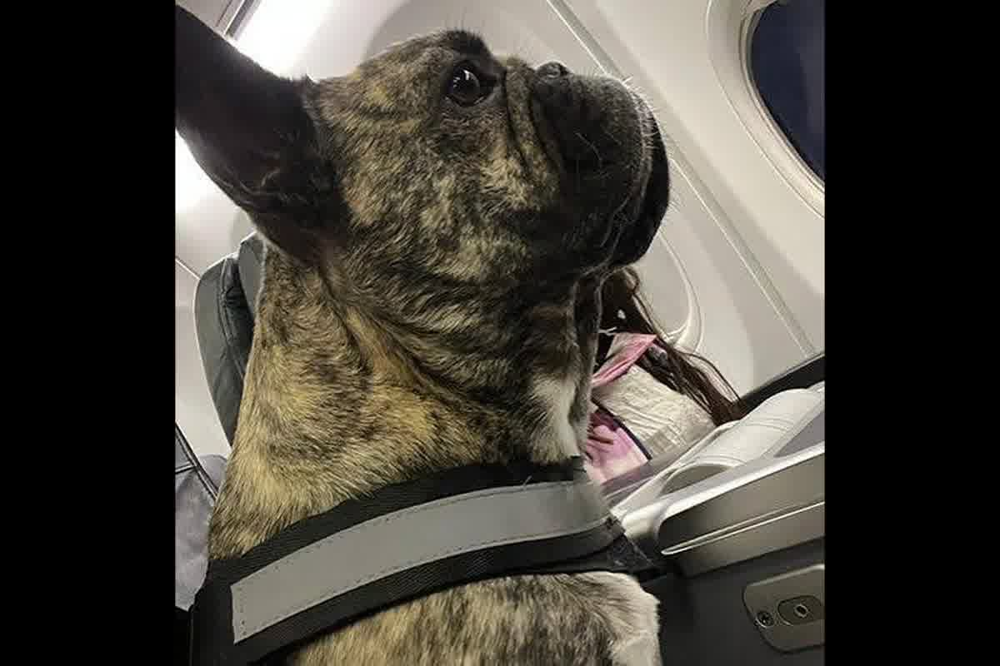
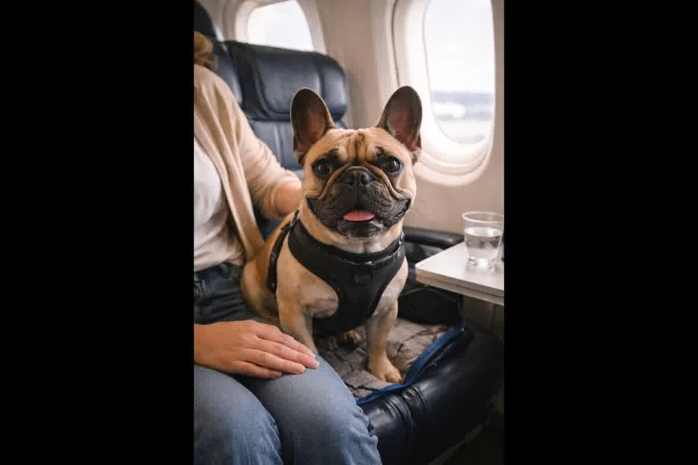

Medical analysis on the risks of air transport in French bulldogs. Hypoxia, thermoregulation and airline restrictions explained by Dr. Jessica Camacho.

The compressed anatomy of the French bulldog makes it the most vulnerable passenger in modern air travel due to its inability to process oxygen under stress. Before you wonderCan my French bulldog fly? what you should know before buying the ticketis that most airlines prohibit its transportation in the hold due to mortality statistics that have not stopped growing. In Trujillo, we see cases where the owner is unaware that excessive panting on land transforms into irreversible respiratory collapse at 8,000 feet of altitude.
The skull of a French bulldog is the result of bone shortening that was not accompanied by reduction of the internal soft tissues. The soft palate is often too long and blocks air from entering the larynx, while stenotic nares act as an inverted funnel that restricts inflow. This mechanical configuration, known as BOAS (Brachycephalic Obstructive Airway Syndrome), forces the animal to exert strenuous muscular effort just to maintain baseline oxygen saturation levels during a commercial flight.
When the aircraft reaches cruising altitude, cabin pressure decreases, reducing the partial pressure of oxygen available for gas exchange. A dog with normal airways compensates for this mild hypoxia without difficulty, but the French bulldog's extra effort generates edema in the laryngeal mucosa that further narrows the air passage. Clinical details on these limitations are found in the technical study Air transport of brachycephalic dogs: physiological risks, risk factors and regulatory framework.

Dogs don't sweat to cool down; They depend almost exclusively on moisture evaporation through panting to regulate their body temperature. The deformity of the nasal structures in this breed eliminates the exchange surface necessary to cool the blood circulating to the brain. During waits on airport runways with temperatures above 25 degrees, the air that the French bulldog inhales is already hot, which nullifies its ability to thermoregulate and raises its internal temperature quickly.
The combination of stress from noise, separation, and ambient heat generates a metabolic cascade that ends in heat stroke before the plane takes off. Airlines apply temperature restrictions based on IATA data because they know that once the animal enters a hyperthermia cycle, medical intervention is nearly impossible inside a cargo container. In our practice in Peru, we evaluate recovery capacity after exercise as an indicator of endurance before authorizing any international movement.
Traveling in the cabin is often presented as the safe solution, but the carrier dimensions required by airlines often do not allow a French bulldog to stand up or turn around comfortably. If the animal weighs more than 8 or 10 kilograms, depending on the carrier, access to the cabin will be denied at the airport counter. The owner then finds it impossible to board because the hold is prohibited and the animal exceeds the limit for traveling under the seat.
It is a common mistake to buy a dog of this breed with the intention of emigrating without first checking the adult weight standard and the specific rules of the destination country. Countries with tropical climates or routes that involve more than one stopover increase the risk of dehydration and accumulated stress. The planning must be strictly medical: if the dog has an advanced degree of BOAS (Brachycephalic Obstructive Airway Syndrome), the trip should not take place under any circumstances, since the probability of sudden death due to asphyxiation is a documented fact in aviation veterinary medicine.
Surgery to correct the nostrils and soft palate is a measure that many owners consider to mitigate respiratory risk before a long trip. Although this intervention improves the quality of life on the ground, it does not guarantee that the animal can safely handle the stress of an international flight. The post-surgical recovery time should be several months to ensure that the tissue inflammation has completely disappeared before subjecting the dog to changes in atmospheric pressure.
The use of sedatives or tranquilizers is strictly contraindicated by most international veterinary protocols and by the airlines themselves. Central nervous system depressant drugs further decrease the animal's ability to keep its airways open and alter the natural response to hypoxia. A French bulldog sedated in flight is significantly more likely to suffer cardiorespiratory arrest because he loses the muscle control necessary to force air into his lungs.
Carrier acclimatization should be a process of months, not days, to reduce the anxiety response at the time of travel. An animal that panics inside the box will increase its respiratory rate and therefore its internal temperature, accelerating the process of respiratory collapse. In Trujillo, we advise on how to manage this behavioral training so that heart rate remains at basal levels, reducing oxygen demand at critical moments of takeoff and landing.
It is essential that the pet undergo a health evaluation that allows the veterinarian to design a structured plan and minimise the risks inherent to the breed due to its physioanatomy. Zoovet Travel performs BOAS (Brachycephalic Obstructive Airway Syndrome) clinical screening in Trujillo to determine if your dog is fit for the flight.